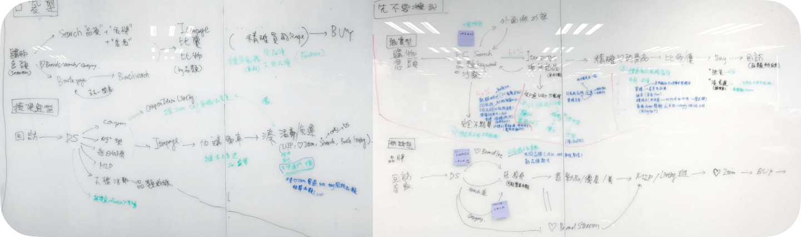
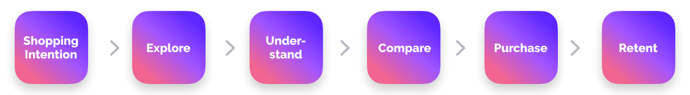
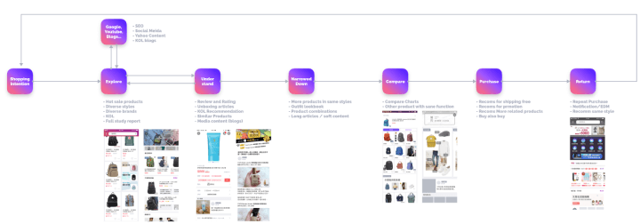

Smart Collection
Design lead, conducted user research and synthesis for insights, 2019
Smart collection is a solution with aggregated styled products and triggers for motivating unintentional purchases.
Project background and defining our goal
At the beginning of this project, the product manager just wanted to create a curated list to trigger users to have more purchases like what our competitor did. Instead of jumping right into the solution, I led the team to dig out why we need this at the point and what could bring the most impact on our business.
From our data and previous study, we knew most users visit e-commerce websites with intentions. And users always compare prices from different platforms. Therefore, most e-commerce platforms cut down prices to attract users. It was effective. However, it was a short-term solution and may hurt the platform in the long run. After aligning with the PM, we set our goal to motivate these price sensitive and intentional users to gain unintentional purchases even when they visit Yahoo Shopping with intentions so that the business is able to profit.
Defining users and journey
We didn’t have research resources at the time, so we leveraged our research assets done before. From our research, we defined 4 types of users for Yahoo shopping. Our first step was to map out and examine the entire user journey of these 4 types of users to the target user. The journey includes the beginning of the journey: having an idea of buying something, the behavior outside of Yahoo Shopping, the browsing and buying experience within Yahoo Shopping and the return behavior after purchases. Discussion on the shopping Journey
After discussion, we decided to focus on two types of users: product focus and inspirational users. For these users, they have more explorations during their shopping journey. And in the exploration stage, there are more chances for us to recommend more inspirations to users to drive unintentional purchases. And for this case study, I’ll focus more on the product-focus users:
“ Product-focus users visit shopping websites when they have a clear intention. And they do research before making buying decisions. They spent much time on exploring and understanding the product. When they decide what to buy, they usually compare the prices between different platforms.
Main journey of product-focus users
Define Scenario
As we looked into the potential scenarios of unintentional purchases, we noticed the scenarios change a lot when it comes to different categories of products. Therefore, we dug into our key categories and found there are more potential to drive unintentional purchases in the following categories: fashion, beauty & personal care, health & household, home & kitchen. From these categories, we found the common relevance is the visual look of the products.
Most users have personal preference in styles. When users have intentions of buying something, they focus on what they are looking for with their preferences. If users see other related products in their preferred style, they have higher chances to explore more and make purchases. Therefore, we identified styles as our key starting point of unintentional purchases.
 Brainstorming for values and solutions
Brainstorming for values and solutions
From our studies, when product focus users do research of the products in their early stage of shopping journey, they are very open to receive information. Because they need various inspirations and knowledge to decide which product to buy. And after purchases, if the products meet their expectations, they will gain trust in the brand or stores. For their next purchase, they will start from these brands or stores to look for what they need. These insights became great assets for us to brainstorm for various ideas in every touch point of the shopping journey. We drafted the ideas and had early discussions with our product manager to align what directions we should go deeper because of limited resources. Then, we create lots of low fidelity wireframes and prototypes to visualize our ideas to think about which solution can drive more purchases. After discussion, we decided to focus on 2 parts of the experiences.Ideas, wireframes and prototypes of ideas on every touch point
The Design Solution
Our design solution is divided into two parts. The first part is to motivate the intentional shoppers with inspirations. We know what products users are looking for in the explore / understand /compare stage. We can provide potential related products to motivate the users to browse more or even buy more. The second part of the solution is to diverse the intentions of the after-purchased users to close the shopping journey loop. We have strong signals after user browsing products and making purchases. Based on the signal, we are able to recommend highly related products to stimulate the users to start a new shopping journey.

Journey loop of the solution
When users visit Yahoo Shopping with an intention, they come and search for a product. They will see the entries of Smart Collection in the search result page. The entries show that Yahoo Shopping selected styled products recommended to users. Inside Smart Collection, there's a collection page with products in the same style. And the products are related to the search keyword. In addition to styled products, there are various inspirational modules with related products to motivate users to explore products that are not what the users intended to buy.
In the below scenario, the user intended to buy a backpack so he/she entered search result page with the keyword “backpack”. And we recommend the simple-styled backpack collection from the user’s previous browsing and buying preferences. With targeting preference, the user will visit Smart Collection to browse the simple-styled backpacks. And among the backpacks the user likes, there are also other recommendations to make the user browse not only backpacks but also different categories of products. The entire experience is like shopping in a fashion magazine. And we believe the magazine-like design can drive unintentional purchases.
Smart Collection design solution
Smart Collection entries in search result pages
Close up of Smart Collection-1
Close up of Smart Collection-2
Many users come back to Yahoo Shopping to check the order and shipping status after purchases. So after the user finished this journey of buying a backpack, we also provide another Smart Collection entry in the home tab of Yahoo Shopping when the users make the next visit. In the after-purchase Smart Collection we start to more proactively introduce products related to the purchased products in various categories and with the same style. Because when we have more information of the users, we’re able to diverse users’ shopping experience with more accurate recommendations. In the example, we provide more fashion products when the user purchased the backpack. And in the stream, the user can imagine how all other products fit with the purchased backpack. We believe the solution can turn the intention-only product focus shoppers start to browse like the inspirational shoppers to make more unintentional purchases.
Recommend more related products in home
Diversified products in the recommendation stream
User research to validate our design
To validate our hypothesis before development, we conducted user research to understand how users get motivated when they’re shopping online and to verify if our assumptions were right. We used the diary study to learn the details of the scenario and user’s behavior when they are browsing unintentionally in Yahoo Shopping and other e-commerce platform. Then we tested our design solution with high fidelity prototype to see if Smart Collection can motivate users to explore more on unintentional purchases.
The result was great. The Participants got motivated by the inspirational modules and explore more products without notice. They even showed appreciations on the inspirations we provided because these were something they hadn't thought of. We also learn more about how users’ interest and thoughts on each of the inspiration modules.
During the research, we also found some usability issues. We tried to introduce too many styles to users at once, so the user all ignore the Smart Collection entry. We iterated the design and tested the iterated version in the last half of research. The iterated version resulted in positive feedback.

Diversified products in the recommendation stream
After the research, we synthesized all the insights and findings. We got more deep insights of the touch points, motivations and content consumed of unintentional purchases. After the insights, we were able to have more design explorations to improve Smart Collection. Synthesizing after user study for insights
Synthesizing after user study for insights
Development and Future work
Although Smart Collection shows positive in the research report, there are too much effort to implement all the features. So we picked features based on user needs, business impact and development effort to define the 1st version of Smart Collection.
After Smart Collection launched, we saw the positive results on the metrics. From the data, users are more willing to explore in Smart Collection. And from the research, we also learned there are also opportunities in other parts of user journey. So our next step is to extend Smart Collection to more touch points in Yahoo Shopping and leverage what we learn to go deeper and improve the existing design.